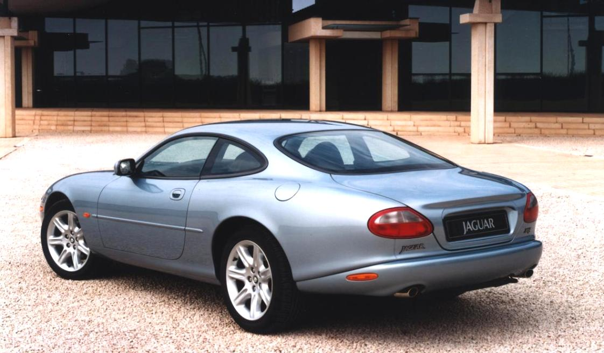
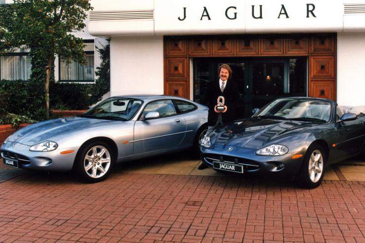

The XK series (XK8 and XKR) is a grand
tourer produced by the British automaker Jaguar since the 1997 model year.
The XKR, which was introduced in May
1998, used
a supercharged variant of the V8 engine used in the XK8 which is also shared with the XJR albeit with a few
air-to-water intercooler modifications and a two piece drive shaft.

Jaguar's XK8 made its first public appearance
as a convertible at the New York auto show in 1996. It debuted to enormous media and public enthusiasm for
its classic, some might say retro, E-Type visual character.
Geoff Lawson

In 1984, he joined Jaguar as Director of
Styling, where he arguably produced his best known and most influential work.